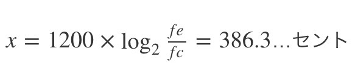

音程を良くする画期的なアプリ『ハモってね Harmonize (ハーモナイズ)で音痴を直そう！』の紹介

純正律の和音の響きを楽しく身につけることができるアプリHarmonize(ハーモナイズ)を作りました。吹奏楽やオケの方はもちろん、音程に自信のないボーカルの方やエレキギターなどの現代楽器にしか触れてこなかった方にも、ぜひぜひ試してもらいたいアプリです。
はじめに
大人になってからコントラバスを習い始めたのがきっかけで作ったのがこのアプリです。それまではエレキベースや、クラシックギターを習ったりしたのですが、フレットのない弦楽器はコントラバスが初めてでした。しかも弓弾き、アルコ奏法です。
バイオリンと比べればコントラバスは低音域だから、音程のズレはそんなに目立たないから余裕じゃない？と思っていたら大間違いでした。
コントラバス、音程がシビアすぎます。レッスンでは毎回先生に音程注意されていました。
手前ミソですが音痴の私でも、このアプリで音の響きの感覚はだいぶ身につきました。
コントラバスを習い始めるまでは正直、「純正律」なんて知りませんでした。かろうじて「平均律」という言葉は聞いたことがありましたが、それもナンノコッチャイナでした。クラシックというか、音楽の基礎を学んでいなかったのですね。
アプリのやり方

アプリの遊び方は、こちらでもわかりやすく説明していますので参考にしてみてください。
https://www.101010.fun/entry/harmonize-how-to-play-ja
アプリの操作方法はすぐに慣れます。正解の和音をよく聴き、指を上下に動かしてその和音の響きに合わせる だけです。
最初は簡単なオクターブからやってみましょう。
上下に動かすことで一つの音だけ音程が変ります。もう一つの音程は固定されています。和音の響きに合ったところでGOボタンを押して正解を確かめましょう。
指を速く動かすと音程が大きく変化します。微調整の場合はゆっくり動かして。
ところでなんと、二胡（にこ）奏者の小林さんが本アプリHarmonizeのやり方をとても分かりやすくYouTubeにアップしてくれました。
自分のアプリがこのように紹介されるのは大変に、うれしいです！さっそく見てみましょう。
この動画ではオクターブだけですが、現バージョンは他の音程も純正律にバッチリ対応しているので安心して使ってくださいね。
セントとは?

ところで、アプリのスコアで表現されている「セント」とはなんのことでしょうか？
セントとは英語のcentのことで、アメリカのお金の単位になっています。100分の1ドルという意味です。イタリア語では100のことをcentoと言ったりするので、語源はラテン語にあるのかもしれませんね。
さて、1オクターブの音程を考えてみましょう。ドから始まってド♯ レ レ♯ ミと続いていき最後の12音目のシで終わります。合計12音あるのですが、12音じゃ大雑把すぎて音程の微妙なズレを判断できません。
えい！１オクターブを1200個に分割しちゃえ！
12音を1200個に分割すると、半音の間には100個分の幅があることになりました。つまりセントとは半音を100セントとした単位のことです。ですから、20セントは半音の1/5であり、10セントは半音の1/10です。
余談ですが、作者がアメリカを旅行した時の事です。バスに搭乗する時に「ハウマッチ？」と料金を尋ねたのですが、黒人の運転手さんは「てぶにーふぁい、てぶにーふぁい」と連呼しています。
何度聞き返してもいくらなのか聞き取れず、その場でドル紙幣を見せたり、財布の中身を見せて必要な分を取ってくれとアピールしたりして、あたふたした経験がありす。
実は先程の「てぶにーふぁい」は75セントのこと。つまりセントを省略してSeventy-fiveと言っていたのです。結局その時は１ドル紙幣払ってなんとか搭乗できたと思います。
純正律と平均律

本アプリでは、純正律を基準に和音の判定をおこなっています。ここで純正律の説明をしたいとおもいます。純正律を説明する上ではまず、平均律のことを話さなければなりません。平均律とは「丸いケーキを均等に12等分したもの」だと思ってください。セントでの説明でもあるように、どのケーキの幅も100セントになります。
例えば、ドとミの場合を考えてみましょう。
平均律ではケーキ4つ分なので400セントとですよね。これに対して純正律では、一つひとつのケーキの幅が違うので困ったことに400セントというわけにはいかないのです。
純正律では、ミはドに対して5/4の周波数比となっているので、計算すると

の幅になります。つまり、平均律と純正律ではドとミの幅が約14セントも違うんです。言い換えれば、純正律のミは平均律のミより-14セント低めに取らなければならないんです。
数学的で、ややこしい話になってしまいましたね。
こんなにややこしい純正律は一体なんのためにあるの？さぞかし、おいしいのでしょうか？
それは純正律の和音を聴いた時に理由が分かります。
こちらの動画では「平均律と純正律の響きの違い」を確認できます。50秒あたりから、和音の比較が始まります。
平均律vs純正律シリーズ 3種類の調律聞き比べ（平均律･純正律･キルンベルガー）/ 3 different tunings - YouTube
どうでしたか？平均律と純正律では、純正律のほうがキレイに響いていませんか？動画ではとても単純な音色（正弦波）なので和音になると顕著に違いが分かります。
ところで、現代のピアノやギターは平均律で作られています。
純正律がこんなにキレイに響くなら、純正律で楽器をつくろうよ！
そう思った方がいると思います。はい、自分も思いました。
そして純正律でギター作るとこんな感じになります。
unleashedmagazinenews.blogspot.com
どうですか？使いこなせそうですか？
現代のピアノやギターは基本的に平均律で調律されています。なぜなら、平均律の長三度などの和音には本来うなりが発生するのですが、ピアノやギターの音色ではそれほど気にならないのです。そして転調が多い現代の楽曲を弾く上では、曲の度に調律をかえていられないので平均律で調律したほうがメリットが大きいのです。
終わりに

本アプリで純正律の和音を合わせるということは、うなりをいかに無くすかです。「音叉」でチューニングするときのように「ウォ〜ン、ウォ〜ン」という ウルフトーン（ヴォルフトーン）が無くなった時の和音が、純正律である響きの可能性が強いということです。透き通った音と言っても良いでしょう。ぜひハーモナイズで楽しく音感を身につけましょう。
最後に、平均律にも純正律にも柔軟に対応できるボーカル、金管・木管楽器、フレットのない弦楽器などは、とても魅力的な楽器なのかもしれませんね。
そう、音程さえ取れればね。